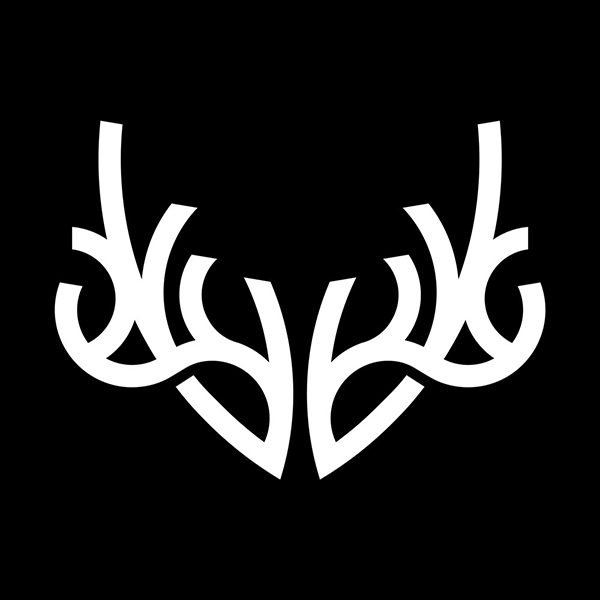

Blackhawk Company Logo
I am pursuing a graphic designer position that allows me to utilize my skills as an artist, user experience designer, and content creator. I aim to provide design solutions for businesses using my unique combination of skill sets gained through my education and personal experiences. In addition to having a passion for Adobe Illustrator, I enjoy doing graphic work, designing logos, and creating graphics for web and print-based projects.